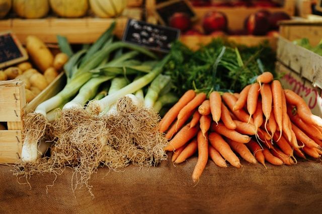
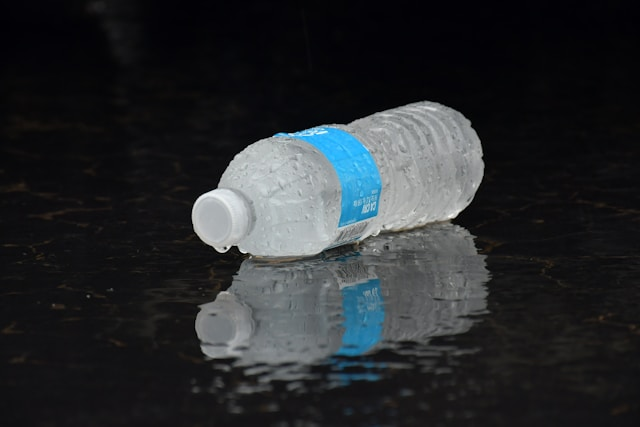
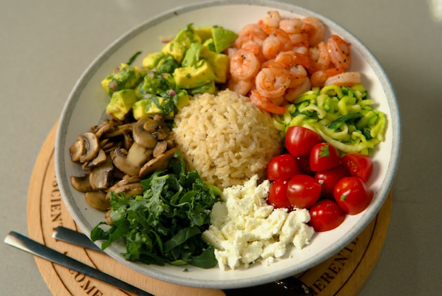
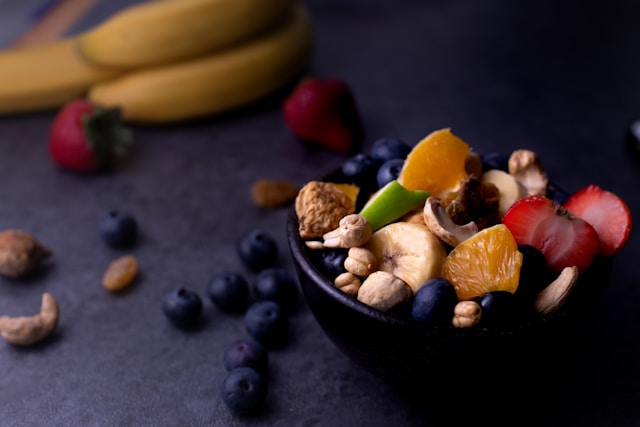

RECOMENDACIONES NUTRICIONALES

Consumí más frutas y verduras
Incluí al menos 5 porciones al día. Aportan vitaminas, minerales, fibra y antioxidantes esenciales para tu salud.

Mantenete bien hidratado
Tomá entre 6 y 8 vasos de agua por día. Evitá bebidas azucaradas y priorizá el agua como principal fuente de hidratación.

Armá platos equilibrados
Dividí el plato: 50% vegetales, 25% proteínas y 25% cereales integrales. Elegí métodos de cocción saludables como horno o vapor.

Elegí colaciones nutritivas
Frutas, yogures, frutos secos o tostadas con palta son excelentes opciones para mantener la energía entre comidas principales.
Combiná buena alimentación con movimiento
Una vida activa complementa una buena alimentación. Caminatas, ejercicios o deportes al menos 3 veces por semana son recomendables.